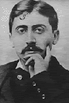

Marcel Proust nait à Auteuil, le 10 juillet 1871, de une famille de la bonne bourgeoisie: son père est un médicin, sa mère vient de une famille juive, riche et raffinée. Dès l'enfance, Marcel a une petite santé et il souffre de asthme cronique, comme le Moi-narrant de son oeuvre. Il acheve ses brillants études au lycée Condorcet. Après il frequente la Sorbonne et l' Ecole de sciences politiques.
Il fonde, avec quelques de son condisciples, différentes revues, qui ont une brève vie. A partir de 1982, il pubblie sur la plus importante, Le Banquet, les récits et les études, qui sont réunis dans le volume "Les plaisirs et les jours", oeuvre qui n' est pas beucoup appréciée par la critique et le public.
Entre temps, après la découverte de la philosophie de Bergson (essentielle pour sa conception du temps et de la mémoire), un autre important événement se vérifie: l'entrée dans le milieu littéraire et musical et dans le monde de l'aristocratie et de la haute bourgeoisie. Proust mene une vie apparemment oisive et snob, mais il est en train de recueillir l'immense matériel de notations psychologiques,qui formera le tissu de "A la recherche du temps perdu".
Il travaille à un roman autobiographique, "Jean Santeuil" (1895- 1899), mais il le laisse inachevé. Vers la fin de la rédaction du roman et dans les successives années, Proust ressent beaucoup de la découverte de Ruskin (et donc de celle des cathédrales gothiques) et il élabore une nouvelle conception de l'art, de la religion et de la beauté. Il écrit des essais sur l'auteur anglais, où il montre d'avoir presque rejoint la poetique que il adoptera dans la Recherche, selon laquelle l'artiste a la tache de percevoir la réalité avec extreme fidélité soit au changement de la réalitè meme soit à la continuelle transformation du Moi qui la refléte .
En 1905, la mort de la mère change tout à coup la vie di Proust: l'ecrivain, qui dès l'enfance l'aime passionnément (presque maladivement) , se sent fautif à cause des continuelles préoccupations qu'il lui procurait pour sa vie dissipée. L'immense travaille de recherche intérieure est interposé de quelques dérivatifs, "Pastiche et mélanges" (1919), "Chroniques" (1927) et le long essai "Contre Sainte-Beuve" (1954), dans lequel l'auteur critique Sainte-Beuve parce-que il est convaincu que la création littéraire est le produit de "un moi différent de celui qui se manifeste dans notres habitudes, dans la vie sociale, dans notres vices".
A partir de 1909 il se dédie entièrement à sa grande oeuvre "A la recherche du temps perdu" qui résout les problèmes de la fantasie créatrice, affrontès jusq'à présent d'une facon abstrait. Proust abandonne complètement la vie mondaine et il se ferme dans sa chambre tapissè de liège pour ne rien entendre du monde extérieure. En 1911 il commence chercher un éditeur, mais, soit parce-que on savait qu'il était pourvu de moyens, soit parce-que sa participation à la vie littéraire avait quelques aspects de dilettante, il est forcé de payer les dépenses d'imprimerie du premier volume, "Du coté de chez Swann" (1913).
Le début de la guerre interrompt la publication, mais elle n'arrete pas l'activitè de Proust, puisque le tragique événement presque ne touche pas sa vie. En 1918 les éditeurs de la "Nouvelle Revue Francaise" lancent le deuxième volume "A l'ombre des jeunes filles en fleurs", qui est couronné par le prix Goncourt.
Désormais célèbre, mais profondément miné par le mal, Proust s'impose un épuisant travaille pour finir son oeuvre: en 1920 la troisième partie sort, "Le coté de Guermantes" et en 1922, la quatrième "Sodome et Gomorre"; lorsque il meurt d'une pneumonie (1922), il a déjà inscrit le mot "Fin" au terme de son enorme cycle. Les derniers titres paraitront après sa mort, publiés par son frère et quelques amis: "La Prisonnière" (1923), "Albertine disparue" (1925) et, surtout, "Le temps retrouvé" (1927). A partir de 1930 commence la publication de la "Correspondance" de Proust.